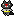

環境によってはサウンド読込に時間がかかる場合があります(1MB)
初めてバーチャルマシンが起動する時も時間がかかります。
倍画面版はこちら
ダウンロード
How to play.
- ○みちゃんにクリックで行き先を指示して家に帰りましょう。
- 帰る途中、きょうぽんでネコゲットするとポイントがうpします。
- 帰宅までに果たして何ポイントゲットできるでしょうか？
ネコゲット
- ネコにタッチすることで、ネコゲットできます。
- 各ステージのスペシャルゲストをゲットすれば、ステージポイントが2倍になります。
注意
- 夕方５時までに帰宅できないと強制的に帰宅になります。残り時間に注意。
- バトーマンにつき合わされると１５分の損失になりますので、できる限り避けましょう。
- 多くのキャラは大きい建物の陰に回り込まれると見えなくなります。（バトーマンに気を付けて）積極的に横丁を探索しましょう。
- ものすごい勢いで移動している>>１さんや、車に触れると危険。
- 大きい道路は、横断歩道のある場所しか渡れません。
主要キャラ
|
○み（？）：主人公、クリックで移動です。 |
|
ネコ： ポイントターゲット、ゲットしてください。 |
|  |
バトーマン： おじゃまキャラ、逃げましょう。 |
|
？？？： スペシャルゲスト？ ポイント2倍のチャンス！ |
仕様
- 表示画面 384*320
- フレームレート 20fps
- JAVA バージョン1.1以上
- MacOS, OSX, Win98（IE）, Win2000（IE）で動作確認
ほかに何か♪
- www.muzie.co.jp/cgi-bin/artist.cgi?id=a001315
- ここの「さかみち」という曲が、かえりみちののふいんき（ry に合っててBGMにしたかったなと．．．（バトーマンは無しで）
戻る